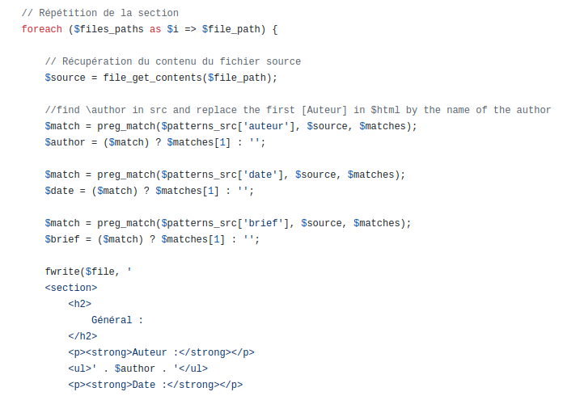

Fichier C et fichier Md
Réalisation de 3 programmes C dans le but de s'en servir pour la conception d'une documentation technique et d'une documentation utilisateur en Markdown.
Génération des fichiers HTML
Pour le document technique, le programme a été concu en PHP en remlacant les balises Markdown en balises HTML. Un second programme a été conçu pour adapter les programmes C en un unique fichier HTML.
Script Bash
Cette dernière étape a été nécessaire dans le projet car cela à permis d'allumer Docker, adapter a version du fichier, de copier les fichiers dans docker, de générer les fichiers html, de les convertir en PDF, de copier tous les fichiers générés en dehors de Docker et de fermer Docker